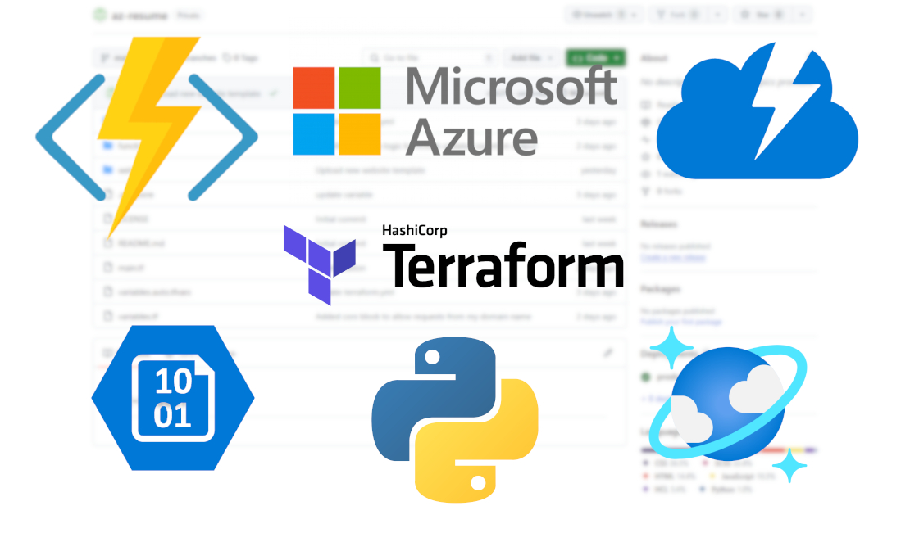

Self-Hosted Resume Website
This project focused on developing and deploying a self-hosted resume website, integrating Jenkins, Terraform, and Ansible for automation. Leveraging GitHub's webhook triggers, Jenkins orchestrates the provisioning of a new VM on Proxmox using Terraform, followed by configuration through Ansible. The website is served using Flask, uWSGI, and Nginx. The web app interacts with a Redis database to display and update a visitor counter in real time using Server-Sent Events.

Azure Website
The website you are on currently. This is a "serverless" website built in Azure using Github Actions, Azure CLI and Terraform. If any changes to the web files are pushed to Github, they trigger a Github Actions workflow to deploy the updated folder to Blob Storage and purge the CDN endpoint. Any modifications to the Azure resources are provisioned using Terraform through Github Actions, including setting the necessary Cloudflare DNS records. This project also incorporates a visitor counter, which stores the data in CosmosDB and is incremented using an Azure Function written in Python.